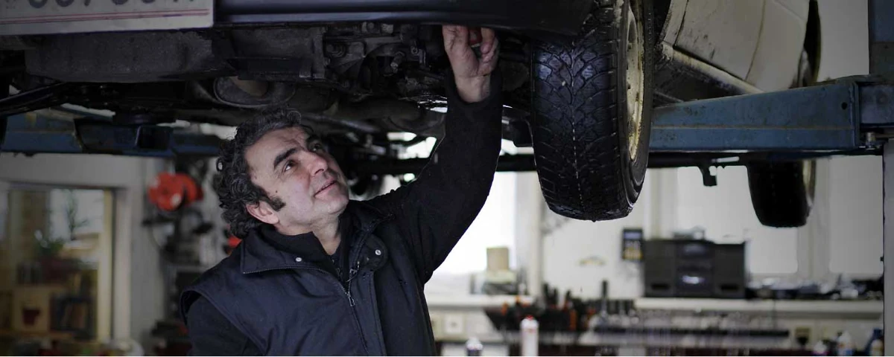
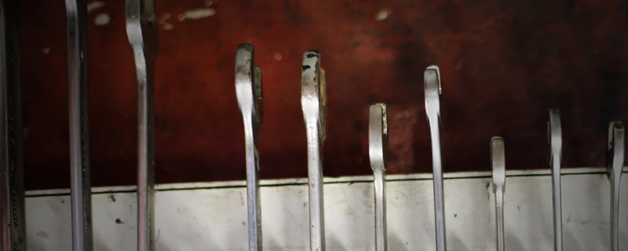
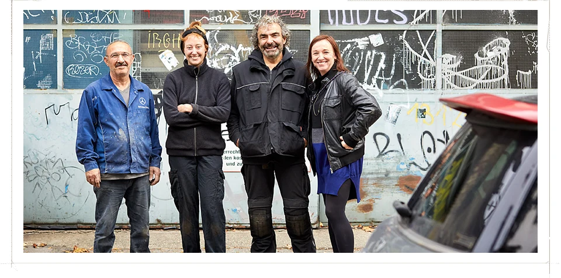
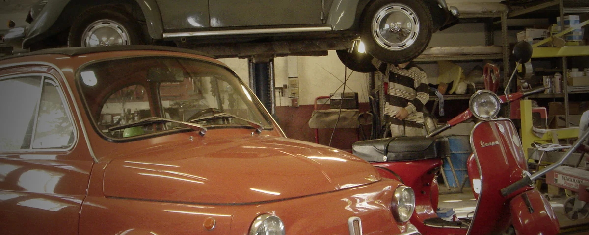
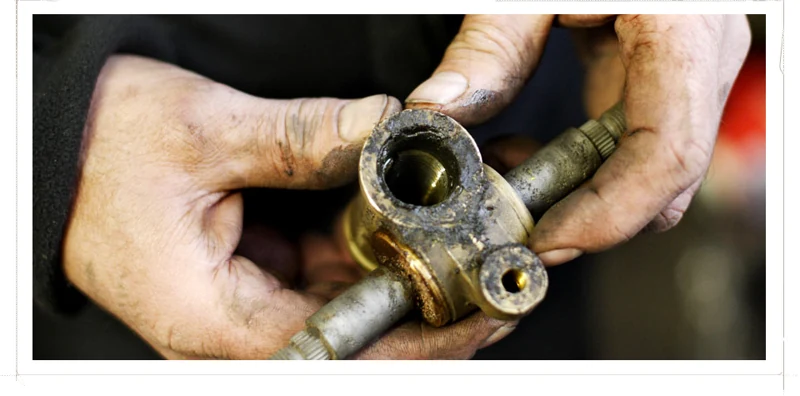
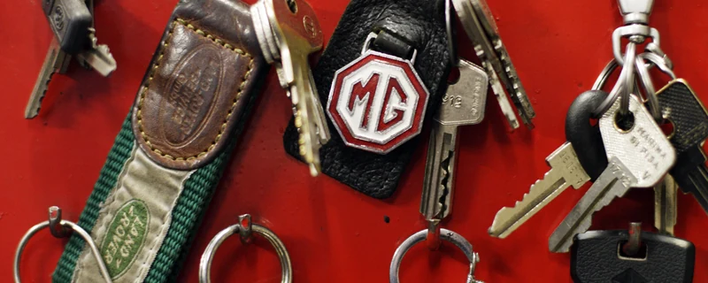
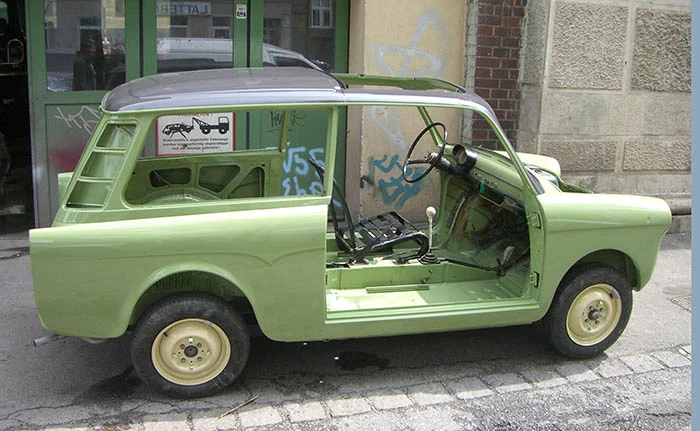
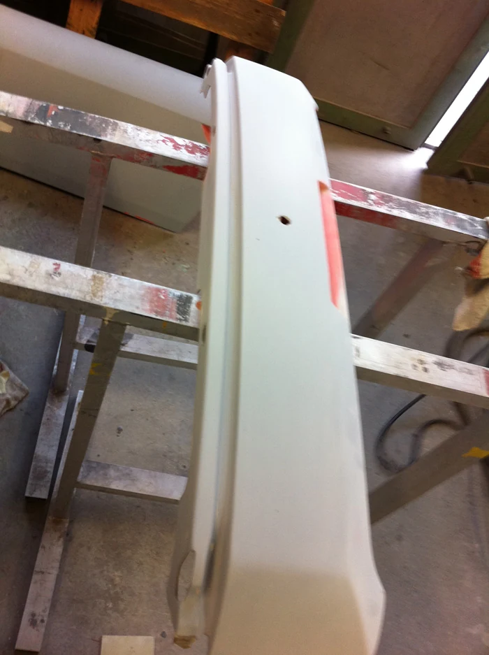

Karosserie & Blech
Instandsetzung und Nachformen mit handwerklichem Gespür für die ursprüngliche Form.
Service, Reparatur und Oldtimer-Restauration.
Persönlich für Sie da – am Hernalser Gürtel.
Ihr Fahrzeug verdient Erfahrung. Und einen Menschen, der zuhört.
Seit 1988 reparieren und restaurieren wir Fahrzeuge unter den Stadtbahnbögen am Hernalser Gürtel. Als kleiner Betrieb nehmen wir Ihre individuellen Wünsche ernst – mit persönlicher Betreuung und handwerklicher Sorgfalt.
Das Team kennenlernenTechnik, Karosserie und Reifen:
das passende Handwerk für Ihr Fahrzeug.
Sie sind liegen geblieben? Wir bieten auch einen Abschleppdienst.
Persönlich besprechen


Peter Drössler & sein Team
Die Leidenschaft für Oldtimer führte Peter Drössler zur eigenen Werkstätte. Nach der KFZ-Meisterprüfung 1987 gründete er den Betrieb im Jahr 1988.
Heute verbindet das Team Mechanik, Karosseriehandwerk und Organisation. Unterschiedliche Talente, ein gemeinsamer Anspruch: Ihr Fahrzeug mit Sorgfalt betreuen.
Persönliche Beratung und individuelle Betreuung in einer Werkstätte mit Geschichte.
Ein klassisches Fahrzeug ist mehr als Technik. Wir widmen uns seiner Karosserie, seinen Blechteilen und seiner Mechanik mit Erfahrung und Fingerspitzengefühl.
Restauration besprechen
Instandsetzung und Nachformen mit handwerklichem Gespür für die ursprüngliche Form.
Feinfühlige Aufarbeitung und Justierung mechanischer Komponenten.
Restaurationen verschiedener Marken – von kleinen Arbeiten bis zum vollständigen Neuaufbau.
Damit wir uns Ihrem Fahrzeug widmen können, vereinbaren Sie bitte zuerst einen Termin.
Montag bis Donnerstag von 11:00 bis 12:00 Uhr erreichen Sie uns für Ihre Terminvereinbarung.
Erzählen Sie uns, welches Fahrzeug Sie fahren und wobei wir Ihnen helfen können.
Sie finden uns am Hernalser Gürtel, Stadtbahnbogen 54–55, in 1080 Wien.




Noch etwas offen? Besprechen Sie Ihr Anliegen persönlich mit uns.
Die Werkstätte anrufenBitte rufen Sie uns ausschließlich Montag bis Donnerstag zwischen 11:00 und 12:00 Uhr unter 01 / 406 42 10 an. Termine werden nur telefonisch vereinbart.
Wir arbeiten an allen Fahrzeugtypen – vom älteren Fahrzeug bis zum modernen Alltagsauto. Auch historische Fahrzeuge sind bei uns willkommen.
Kostenvoranschläge werden nicht per E-Mail erstellt. Bitte besprechen Sie Ihr Anliegen telefonisch mit der Werkstätte.
Ja. Unser Angebot umfasst die Instandsetzung von Karosserie und Blechteilen sowie die Aufarbeitung mechanischer Komponenten wie Motor, Getriebe und Lenkung.
Ja, beides gehört zu unserem Leistungsangebot. Rufen Sie für die Abstimmung bitte die Werkstätte an. Ein durchgehender Notdienst wird nicht angeboten oder zugesichert.
Automobilhandwerk Peter Drössler.
Wir freuen uns auf Ihren Anruf.
Termine nur telefonisch. Keine Kostenvoranschläge per E-Mail.
Nur telefonisch · Mo–Do
11:00–12:00 Uhr
Alltagsauto oder Klassiker – besprechen wir, was Ihr Fahrzeug braucht.
01 / 406 42 10 anrufenTermintelefon: Montag–Donnerstag, 11:00–12:00 Uhr